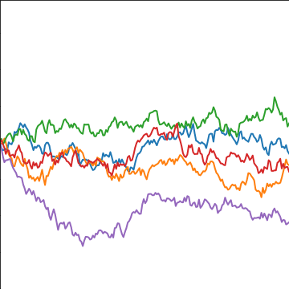
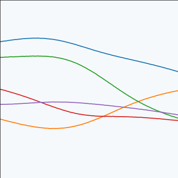

Deep Probabilistic Modelling with with Gaussian Processes
Neil D. Lawrence
What is Machine Learning?
\[ \text{data} + \text{model} \rightarrow \text{prediction}\]
- \(\text{data}\) : observations, could be actively or passively acquired (meta-data).
- \(\text{model}\) : assumptions, based on previous experience (other data! transfer learning etc), or beliefs about the regularities of the universe. Inductive bias.
- \(\text{prediction}\) : an action to be taken or a categorization or a quality score.
Artificial Intelligence
- Machine learning is a mainstay because of importance of prediction.
What is Machine Learning?
\[\text{data} + \text{model} \rightarrow \text{prediction}\]
- To combine data with a model need:
- a prediction function \(f(\cdot)\) includes our beliefs about the regularities of the universe
- an objective function \(E(\cdot)\) defines the cost of misprediction.
Uncertainty
Uncertainty in prediction arises from:
scarcity of training data and
mismatch between the set of prediction functions we choose and all possible prediction functions.
Also uncertainties in objective, leave those for another day.
Neural Networks and Prediction Functions
adaptive non-linear function models inspired by simple neuron models (McCulloch and Pitts, 1943)
have become popular because of their ability to model data.
can be composed to form highly complex functions
start by focussing on one hidden layer
Prediction Function of One Hidden Layer
\[ f({\bf x}) = \left.\mathbf{w}^{(2)}\right.^\top \boldsymbol{\phi}(\mathbf{W}_{1}, {\bf x}) \]
\(f(\cdot)\) is a scalar function with vector inputs,
\(\boldsymbol{\phi}(\cdot)\) is a vector function with vector inputs.
dimensionality of the vector function is known as the number of hidden units, or the number of neurons.
elements of \(\boldsymbol{\phi}(\cdot)\) are the activation function of the neural network
elements of \(\mathbf{W}_{1}\) are the parameters of the activation functions.
Relations with Classical Statistics
In statistics activation functions are known as basis functions.
would think of this as a linear model: not linear predictions, linear in the parameters
\(\mathbf{W}_{1}\) are static parameters.
Adaptive Basis Functions
In machine learning we optimize \(\mathbf{W}_{1}\) as well as \(\mathbf{W}_{2}\) (which would normally be denoted in statistics by \(\boldsymbol{\beta}\)).
This tutorial: revisit that decision: follow the path of Radford Neal (Neal, 1994) and David MacKay (MacKay, 1992).
Consider the probabilistic approach.
Probabilistic Modelling
- Probabilistically we want, \[ p(y_*|\mathbf{y}, {\bf X}, {\bf x}_*), \] \(y_*\) is a test output \({\bf x}_*\) is a test input \({\bf X}\) is a training input matrix \(\mathbf{y}\) is training outputs
Joint Model of World
\[ p(y_*|\mathbf{y}, {\bf X}, {\bf x}_*) = \int p(y_*|{\bf x}_*, \mathbf{W}) p(\mathbf{W}| \mathbf{y}, {\bf X}) \text{d} \mathbf{W} \]
\(\mathbf{W}\) contains \(\mathbf{W}_1\) and \(\mathbf{W}_2\)
\(p(\mathbf{W}| \mathbf{y}, {\bf X})\) is posterior density
Likelihood
\(p(y|{\bf x}, \mathbf{W})\) is the likelihood of data point
Normally assume independence: \[ p(\mathbf{y}|{\bf X}, \mathbf{W}) \prod_{i=1}^np(y_i|{\bf x}_i, \mathbf{W}),\]
Likelihood and Prediction Function
\[ p(y_i | f({\bf x}_i)) = \frac{1}{\sqrt{2\pi \sigma^2}} \exp\left(-\frac{\left(y_i - f({\bf x}_i)\right)^2}{2\sigma^2}\right) \]
Unsupervised Learning
Can also consider priors over latents \[ p(\mathbf{y}_*|\mathbf{y}) = \int p(\mathbf{y}_*|{\bf X}_*, \mathbf{W}) p(\mathbf{W}| \mathbf{y}, {\bf X}) p({\bf X}) p({\bf X}_*) \text{d} \mathbf{W}\text{d} {\bf X}\text{d}{\bf X}_* \]
This gives unsupervised learning.
Probabilistic Inference
Data: \(\mathbf{y}\)
Model: \(p(\mathbf{y}, \mathbf{y}^*)\)
Prediction: \(p(\mathbf{y}^*| \mathbf{y})\)
Graphical Models
Represent joint distribution through conditional dependencies.
E.g. Markov chain
\[p(\mathbf{y}) = p(y_n| y_{n-1}) p(y_{n-1}|y_{n-2}) \dots p(y_{2} | y_{1})\]
Predict Perioperative Risk of Clostridium Difficile Infection Following Colon Surgery

(Steele et al., 2012)
Performing Inference
Easy to write in probabilities
But underlying this is a wealth of computational challenges.
High dimensional integrals typically require approximation.
Linear Models
In statistics, focussed more on linear model implied by \[ f({\bf x}) = \left.\mathbf{w}\right.^{(2)}^\top \boldsymbol{\phi}(\mathbf{W}_1, {\bf x}) \]
Hold \(\mathbf{W}_1\) fixed for given analysis.
Gaussian prior for \(\mathbf{W}\), \[ \mathbf{w}^{(2)} \sim \mathcal{N}\left(\mathbf{0},\mathbf{C}\right). \] \[ y_i = f({\bf x}_i) + \epsilon_i, \] where \[ \epsilon_i \sim \mathcal{N}\left(0,\sigma^2\right) \]
Linear Gaussian Models
- Normally integrals are complex but for this Gaussian linear case they are trivial.
Multivariate Gaussian Properties
Recall Univariate Gaussian Properties
- Sum of Gaussian variables is also Gaussian.
\[{y}_i \sim {\mathcal{N}\left({\mu}_i,\sigma_i^2\right)}\]
\[\sum_{i=1}^{{n}} {y}_i \sim {\mathcal{N}\left(\sum_{i=1}^{n}{\mu}_i,\sum_{i=1}^{n}\sigma_i^2\right)}\]
- Scaling a Gaussian leads to a Gaussian.
\[{y}\sim {\mathcal{N}\left({\mu},\sigma^2\right)}\]
\[{w}{y}\sim {\mathcal{N}\left({w}{\mu},{w}^2 \sigma^2\right)}\]
Multivariate Consequence
\[{{\bf {x}}}\sim {\mathcal{N}\left({\boldsymbol{{\mu}}},\boldsymbol{\Sigma}\right)}\]
\[{\mathbf{{y}}}= {\mathbf{W}}{{\bf {x}}}\]
\[{\mathbf{{y}}}\sim {\mathcal{N}\left({\mathbf{W}}{\boldsymbol{{\mu}}},{\mathbf{W}}\boldsymbol{\Sigma}{\mathbf{W}}^\top\right)}\]
Linear Gaussian Models
- linear Gaussian models are easier to deal with
- Even the parameters within the process can be handled, by considering a particular limit.
Multivariate Gaussian Properties
- If \[ \mathbf{y}= \mathbf{W}{\bf x}+ \boldsymbol{\epsilon}, \]
- Assume \[\begin{align} {\bf x}& \sim \mathcal{N}\left(\boldsymbol{\mu},\mathbf{C}\right)\\ \boldsymbol{\epsilon}& \sim \mathcal{N}\left(\mathbf{0},\boldsymbol{\Sigma}\right) \end{align}\]
- Then \[ \mathbf{y}\sim \mathcal{N}\left(\mathbf{W}\boldsymbol{\mu},\mathbf{W}\mathbf{C}\mathbf{W}^\top + \boldsymbol{\Sigma}\right). \] If \(\boldsymbol{\Sigma}=\sigma^2\mathbf{I}\), this is Probabilistic Principal Component Analysis (Tipping and Bishop, 1999), because we integrated out the inputs (or latent variables they would be called in that case).
Non linear on Inputs
- Set each activation function computed at each data point to be \[ \phi_{i,j} = \phi(\mathbf{w}^{(1)}_{j}, {\bf x}_{i}) \] Define design matrix \[ \boldsymbol{\Phi}= \begin{bmatrix} \phi_{1, 1} & \phi_{1, 2} & \dots & \phi_{1, h} \\ \phi_{1, 2} & \phi_{1, 2} & \dots & \phi_{1, n} \\ \vdots & \vdots & \ddots & \vdots \\ \phi_{n, 1} & \phi_{n, 2} & \dots & \phi_{n, h} \end{bmatrix}. \]
Matrix Representation of a Neural Network
\[f\left({\bf x}\right) = \boldsymbol{\phi}\left({\bf x}\right)^\top \mathbf{w}+ \epsilon\]
\[\mathbf{y}= \boldsymbol{\Phi}\mathbf{w}+ \boldsymbol{\epsilon}\]
\[\boldsymbol{\epsilon}\sim \mathcal{N}\left(\mathbf{0},\sigma^2\mathbf{I}\right)\]
Prior Density
Define \[ \mathbf{w}\sim \mathcal{N}\left(\mathbf{0},\alpha\mathbf{I}\right), \]
Rules of multivariate Gaussians to see that, \[ \mathbf{y}\sim \mathcal{N}\left(\mathbf{0},\alpha \boldsymbol{\Phi}\boldsymbol{\Phi}^\top + \sigma^2 \mathbf{I}\right). \]
\[ \mathbf{K}= \alpha \boldsymbol{\Phi}\boldsymbol{\Phi}^\top + \sigma^2 \mathbf{I}. \]
Joint Gaussian Density
- Elements are a function \(k_{i,j} = k\left({\bf x}_i, {\bf x}_j\right)\)
\[ \mathbf{K}= \alpha \boldsymbol{\Phi}\boldsymbol{\Phi}^\top + \sigma^2 \mathbf{I}. \]
Covariance Function
\[ k_f\left({\bf x}_i, {\bf x}_j\right) = \alpha \boldsymbol{\phi}\left(\mathbf{W}_1, {\bf x}_i\right)^\top \boldsymbol{\phi}\left(\mathbf{W}_1, {\bf x}_j\right) \]
- formed by inner products of the rows of the design matrix.
Gaussian Process
Instead of making assumptions about our density over each data point, \(y_i\) as i.i.d.
make a joint Gaussian assumption over our data.
covariance matrix is now a function of both the parameters of the activation function, \(\mathbf{W}_1\), and the input variables, \({\bf X}\).
Arises from integrating out \(\mathbf{w}^{(2)}\).
Basis Functions
Can be very complex, such as deep kernels, (Cho and Saul, 2009) or could even put a convolutional neural network inside.
Viewing a neural network in this way is also what allows us to beform sensible batch normalizations (Ioffe and Szegedy, 2015).
Non-degenerate Gaussian Processes
This process is degenerate.
Covariance function is of rank at most \(h\).
As \(n\rightarrow \infty\), covariance matrix is not full rank.
Leading to \(\left|\mathbf{K}\right| = 0\)
Infinite Networks
- In ML Radford Neal (Neal, 1994) asked “what would happen if you took \(h\rightarrow \infty\)?”

Page 37 of Radford Neal’s 1994 thesis
Roughly Speaking
Instead of \[\begin{align*} k_f\left({\bf x}_i, {\bf x}_j\right) & = \alpha \boldsymbol{\phi}\left(\mathbf{W}_1, {\bf x}_i\right)^\top \boldsymbol{\phi}\left(\mathbf{W}_1, {\bf x}_j\right)\\ & = \alpha \sum_k \phi\left(\mathbf{w}^{(1)}_k, {\bf x}_i\right) \phi\left(\mathbf{w}^{(1)}_k, {\bf x}_j\right) \end{align*}\]
Sample infinitely many from a prior density, \(p(\mathbf{w}^{(1)})\), \[ k_f\left({\bf x}_i, {\bf x}_j\right) = \alpha \int \phi\left(\mathbf{w}^{(1)}, {\bf x}_i\right) \phi\left(\mathbf{w}^{(1)}, {\bf x}_j\right) p(\mathbf{w}^{(1)}) \text{d}\mathbf{w}^{(1)} \]
Also applies for non-Gaussian \(p(\mathbf{w}^{(1)})\) because of the central limit theorem.
Simple Probabilistic Program
If \[\begin{align*} \mathbf{w}^{(1)} & \sim p(\cdot)\\ \phi_i & = \phi\left(\mathbf{w}^{(1)}, {\bf x}_i\right), \end{align*}\] has finite variance.
Then taking number of hidden units to infinity, is also a Gaussian process.
Further Reading
Chapter 2 of Neal’s thesis
Rest of Neal’s thesis.
David MacKay’s PhD thesis (MacKay, 1992)
Distributions over Functions
Sampling a Function
Multi-variate Gaussians
We will consider a Gaussian with a particular structure of covariance matrix.
Generate a single sample from this 25 dimensional Gaussian distribution, \(\mathbf{f}=\left[f_{1},f_{2}\dots f_{25}\right]\).
We will plot these points against their index.
Gaussian Distribution Sample
A 25 dimensional correlated random variable (values ploted against index)
Gaussian Distribution Sample
A 25 dimensional correlated random variable (values ploted against index)
Gaussian Distribution Sample
A 25 dimensional correlated random variable (values ploted against index)
Gaussian Distribution Sample
A 25 dimensional correlated random variable (values ploted against index)
Gaussian Distribution Sample
A 25 dimensional correlated random variable (values ploted against index)
Gaussian Distribution Sample
A 25 dimensional correlated random variable (values ploted against index)
Gaussian Distribution Sample
A 25 dimensional correlated random variable (values ploted against index)
Gaussian Distribution Sample
A 25 dimensional correlated random variable (values ploted against index)
Gaussian Distribution Sample
A 25 dimensional correlated random variable (values ploted against index)
Prediction of \(f_{2}\) from \(f_{1}\)
A 25 dimensional correlated random variable (values ploted against index)
Prediction of \(f_{2}\) from \(f_{1}\)
A 25 dimensional correlated random variable (values ploted against index)
Prediction of \(f_{2}\) from \(f_{1}\)
A 25 dimensional correlated random variable (values ploted against index)
Prediction of \(f_{2}\) from \(f_{1}\)
A 25 dimensional correlated random variable (values ploted against index)
Prediction of \(f_{5}\) from \(f_{1}\)
A 25 dimensional correlated random variable (values ploted against index)
Prediction of \(f_{5}\) from \(f_{1}\)
A 25 dimensional correlated random variable (values ploted against index)
Prediction of \(f_{5}\) from \(f_{1}\)
A 25 dimensional correlated random variable (values ploted against index)
Prediction of \(f_{5}\) from \(f_{1}\)
A 25 dimensional correlated random variable (values ploted against index)
Key Object
Covariance function, \(\mathbf{K}\)
Determines properties of samples.
Function of \({\bf X}\), \[k_{i,j} = k({\bf x}_i, {\bf x}_j)\]
Linear Algebra
Posterior mean
\[f_D({\bf x}_*) = \mathbf{k}({\bf x}_*, {\bf X}) \mathbf{K}^{-1} \mathbf{y}\]
Posterior covariance \[\mathbf{C}_* = \mathbf{K}_{*,*} - \mathbf{K}_{*,\mathbf{f}} \mathbf{K}^{-1} \mathbf{K}_{\mathbf{f}, *}\]
Linear Algebra
Posterior mean
\[f_D({\bf x}_*) = \mathbf{k}({\bf x}_*, {\bf X}) \boldsymbol{\alpha}\]
Posterior covariance \[\mathbf{C}_* = \mathbf{K}_{*,*} - \mathbf{K}_{*,\mathbf{f}} \mathbf{K}^{-1} \mathbf{K}_{\mathbf{f}, *}\]
Exponentiated Quadratic Covariance
\[k(\mathbf{x}, \mathbf{x}^\prime) = \alpha \exp\left(-\frac{\left\Vert \mathbf{x} - \mathbf{x}^\prime\right\Vert^2_2}{2\ell^2}\right)\]

|
Olympic Marathon Data
|
Image from Wikimedia Commons http://bit.ly/16kMKHQ |
Olympic Marathon Data
Olympic Marathon Data
Basis Function Covariance
\[k(\mathbf{x}, \mathbf{x}^\prime) = \boldsymbol{\phi}(\mathbf{x})^\top \boldsymbol{\phi(\mathbf{x}^\prime)}\]

|
Brownian Covariance
\[k(t, t^\prime) = \alpha \min(t, t^\prime)\]
|  |
Multilayer Perceptron Covariance
\[k(\mathbf{x}, \mathbf{x}^\prime) = \alpha \arcsin\left(\frac{w \mathbf{x}^\top \mathbf{x}^\prime + b} {\sqrt{\left(w \mathbf{x}^\top \mathbf{x} + b + 1\right) \left(w \left.\mathbf{x}^\prime\right.^\top \mathbf{x}^\prime + b + 1\right)}}\right)\]
|  |

 \(=f\Bigg(\) \(\Bigg)\)
\(=f\Bigg(\) \(\Bigg)\)
Deep Gaussian Processes
Approximations

Image credit: Kai Arulkumaran
Approximations

Image credit: Kai Arulkumaran
Approximations

Image credit: Kai Arulkumaran
Approximations

Image credit: Kai Arulkumaran
Full Gaussian Process Fit
Inducing Variable Fit
Inducing Variable Param Optimize
Inducing Variable Full Optimize
Full Gaussian Process Fit
Mordern Review
A Unifying Framework for Gaussian Process Pseudo-Point Approximations using Power Expectation Propagation Bui et al. (2017)
Deep Gaussian Processes and Variational Propagation of Uncertainty Damianou (2015)
Deep Neural Network
Deep Neural Network
Mathematically
\[ \begin{align} \mathbf{h}_{1} &= \phi\left(\mathbf{W}_1 {\bf x}\right)\\ \mathbf{h}_{2} &= \phi\left(\mathbf{W}_2\mathbf{h}_{1}\right)\\ \mathbf{h}_{3} &= \phi\left(\mathbf{W}_3 \mathbf{h}_{2}\right)\\ \mathbf{y}&= \mathbf{w}_4 ^\top\mathbf{h}_{3} \end{align} \]
Overfitting
Potential problem: if number of nodes in two adjacent layers is big, corresponding \(\mathbf{W}\) is also very big and there is the potential to overfit.
Proposed solution: “dropout”.
Alternative solution: parameterize \(\mathbf{W}\) with its SVD. \[\mathbf{W}= \mathbf{U}\boldsymbol{\Lambda}\mathbf{V}^\top\] or \[\mathbf{W}= \mathbf{U}\mathbf{V}^\top\] where if \(\mathbf{W}\in \Re^{k_1\times k_2}\) then \(\mathbf{U}\in \Re^{k_1\times q}\) and \(\mathbf{V}\in \Re^{k_2\times q}\), i.e. we have a low rank matrix factorization for the weights.
Low Rank Approximation
Deep Neural Network
Deep Neural Network
Mathematically
\[ \begin{align} \mathbf{z}_{1} &= \mathbf{V}^\top_1 {\bf x}\\ \mathbf{h}_{1} &= \phi\left(\mathbf{U}_1 \mathbf{z}_{1}\right)\\ \mathbf{z}_{2} &= \mathbf{V}^\top_2 \mathbf{h}_{1}\\ \mathbf{h}_{2} &= \phi\left(\mathbf{U}_2 \mathbf{z}_{2}\right)\\ \mathbf{z}_{3} &= \mathbf{V}^\top_3 \mathbf{h}_{2}\\ \mathbf{h}_{3} &= \phi\left(\mathbf{U}_3 \mathbf{z}_{3}\right)\\ \mathbf{y}&= \mathbf{w}_4^\top\mathbf{h}_{3} \end{align} \]
A Cascade of Neural Networks
\[\begin{align} \mathbf{z}_{1} &= \mathbf{V}^\top_1 {\bf x}\\ \mathbf{z}_{2} &= \mathbf{V}^\top_2 \phi\left(\mathbf{U}_1 \mathbf{z}_{1}\right)\\ \mathbf{z}_{3} &= \mathbf{V}^\top_3 \phi\left(\mathbf{U}_2 \mathbf{z}_{2}\right)\\ \mathbf{y}&= \mathbf{w}_4 ^\top \mathbf{z}_{3} \end{align} \]
Cascade of Gaussian Processes
Replace each neural network with a Gaussian process \[ \begin{align} \mathbf{z}_{1} &= \mathbf{f}_1\left({\bf x}\right)\\ \mathbf{z}_{2} &= \mathbf{f}_2\left(\mathbf{z}_{1}\right)\\ \mathbf{z}_{3} &= \mathbf{f}_3\left(\mathbf{z}_{2}\right)\\ \mathbf{y}&= \mathbf{f}_4\left(\mathbf{z}_{3}\right) \end{align} \]
Equivalent to prior over parameters, take width of each layer to infinity.
Mathematically
- Composite multivariate function \[\mathbf{g}({\bf x})=\mathbf{f}_5(\mathbf{f}_4(\mathbf{f}_3(\mathbf{f}_2(\mathbf{f}_1({\bf x})))))\]
Equivalent to Markov Chain
- Composite multivariate function
\[p(\mathbf{y}|{\bf x})= p(\mathbf{y}|\mathbf{f}_5)p(\mathbf{f}_5|\mathbf{f}_4)p(\mathbf{f}_4|\mathbf{f}_3)p(\mathbf{f}_3|\mathbf{f}_2)p(\mathbf{f}_2|\mathbf{f}_1)p(\mathbf{f}_1|{\bf x})\]
Why Deep?
Gaussian processes give priors over functions.
Elegant properties:
- e.g. Derivatives of process are also Gaussian distributed (if they exist).
For particular covariance functions they are ‘universal approximators’, i.e. all functions can have support under the prior.
Gaussian derivatives might ring alarm bells.
E.g. a priori they don’t believe in function ‘jumps’.
Process Composition
From a process perspective: process composition.
A (new?) way of constructing more complex processes based on simpler components.
Difficulty for Probabilistic Approaches
Propagate a probability distribution through a non-linear mapping.
Normalisation of distribution becomes intractable.
Difficulty for Probabilistic Approaches
Propagate a probability distribution through a non-linear mapping.
Normalisation of distribution becomes intractable.
Difficulty for Probabilistic Approaches
Propagate a probability distribution through a non-linear mapping.
Normalisation of distribution becomes intractable.
Deep Gaussian Processes
Deep architectures allow abstraction of features (Bengio, 2009; Hinton and Osindero, 2006; Salakhutdinov and Murray, 2008)
We use variational approach to stack GP models.
Stacked PCA
Stacked PCA
Stacked PCA
Stacked PCA
Stacked PCA
Stacked GP
Stacked GP
Stacked GP
Stacked GP
Stacked GP
Analysis of Deep GPs
Avoiding pathologies in very deep networks Duvenaud et al. (2014) show that the derivative distribution of the process becomes more heavy tailed as number of layers increase.
How Deep Are Deep Gaussian Processes? Dunlop et al. (2017) perform a theoretical analysis possible through conditional Gaussian Markov property.
Olympic Marathon Data
Olympic Marathon Data GP
Olympic Marathon Data Deep GP
Olympic Marathon Data Latent 1
Olympic Marathon Data Latent 2
Robot WiFi Data
Robot WiFi Data GP
Robot WiFi Data GP
Robot WiFi Data Latent Space
Robot WiFi Data Latent Space
Motion Capture
‘High five’ data.
Model learns structure between two interacting subjects.
Shared LVM

Digits Data Set
Are deep hierarchies justified for small data sets?
We can lower bound the evidence for different depths.
For 150 6s, 0s and 1s from MNIST we found at least 5 layers are required.

Deep Health
At this Year’s NIPS
- Gaussian process based nonlinear latent structure discovery in multivariate spike train data Wu et al. (2017)
- Doubly Stochastic Variational Inference for Deep Gaussian Processes Salimbeni and Deisenroth (2017)
- Deep Multi-task {G}aussian Processes for Survival Analysis with Competing Risks Alaa and van der Schaar (2017)
- Counterfactual Gaussian Processes for Reliable Decision-making and What-if Reasoning Schulam and Saria (2017)
Some Other Works
- Deep Survival Analysis Ranganath et al. (2016)
- Recurrent Gaussian Processes Mattos et al. (2015)
- Gaussian Process Based Approaches for Survival Analysis Saul (2016)
Multi-fidelity Modelling
Deep nets are powerful approach to images, speech, language.
Proposal: Deep GPs may also be a great approach, but better to deploy according to natural strengths.
Uncertainty Quantification
Probabilistic numerics, surrogate modelelling, emulation, and UQ.
Not a fan of AI as a term.
But we are faced with increasing amounts of algorithmic decision making.
ML and Decision Making
When trading off decisions: compute or acquire data?
There is a critical need for uncertainty.
Uncertainty Quantification
Uncertainty quantification (UQ) is the science of quantitative characterization and reduction of uncertainties in both computational and real world applications. It tries to determine how likely certain outcomes are if some aspects of the system are not exactly known.
- Interaction between physical and virtual worlds of major interest for Amazon.
Example: Formula One Racing
Designing an F1 Car requires CFD, Wind Tunnel, Track Testing etc.
How to combine them?
Multi-Fidelity Emulation
- Normally assume that (Kandasamy et al., 2016,Alonso et al. (2017)):
\[f_i\left({\bf x}\right) = \rho f_{i-1}\left({\bf x}\right) + \delta_i\left({\bf x}\right)\]
Deep GP Emulation
But with Deep Gaussian processes (Perdikaris et al., 2017) we can consider the form
\[f_i\left({\bf x}\right) = g_{i}\left(f_{i-1}\left({\bf x}\right)\right) + \delta_i\left({\bf x}\right),\]
Notebook Example
Acknowledgments
Stefanos Eleftheriadis, John Bronskill, Hugh Salimbeni, Rich Turner, Zhenwen Dai, Javier Gonzalez, Andreas Damianou, Mark Pullin.
Ongoing Code
Powerful framework but
Software isn’t there yet.
Our focus: Gaussian Processes driven by MXNet
Composition of GPs, Neural Networks, Other Models
Thanks!
- twitter: @lawrennd
- blog: http://inverseprobability.com
References
Alaa, A.M., van der Schaar, M., 2017. Deep multi-task Gaussian processes for survival analysis with competing risks, in: Guyon, I., Luxburg, U.V., Bengio, S., Wallach, H., Fergus, R., Vishwanathan, S., Garnett, R. (Eds.), Advances in Neural Information Processing Systems 30. Curran Associates, Inc., pp. 2326–2334.
Alonso, M., Berkenkamp, F., Hennig, P., Schoellig, A.P., Krause, A., Schaal, S., Trimpe, S., 2017. Virtual vs. Real: Trading off simulations and physical experiments in reinforcement learning with Bayesian optimization, in: Proceedings of the Ieee International Conference on Robotics and Automation (Icra). pp. 1557–1563.
Bengio, Y., 2009. Learning Deep Architectures for AI. Found. Trends Mach. Learn. 2, 1–127. https://doi.org/10.1561/2200000006
Bui, T.D., Yan, J., Turner, R.E., 2017. A unifying framework for gaussian process pseudo-point approximations using power expectation propagation. Journal of Machine Learning Research 18, 1–72.
Cho, Y., Saul, L.K., 2009. Kernel methods for deep learning, in: Bengio, Y., Schuurmans, D., Lafferty, J.D., Williams, C.K.I., Culotta, A. (Eds.), Advances in Neural Information Processing Systems 22. Curran Associates, Inc., pp. 342–350.
Damianou, A., 2015. Deep gaussian processes and variational propagation of uncertainty (PhD thesis). University of Sheffield.
Dunlop, M.M., Girolami, M., Stuart, A.M., Teckentrup, A.L., 2017. How Deep Are Deep Gaussian Processes? ArXiv e-prints.
Duvenaud, D., Rippel, O., Adams, R., Ghahramani, Z., 2014. Avoiding pathologies in very deep networks, in: Kaski, S., Corander, J. (Eds.), Proceedings of the Seventeenth International Conference on Artificial Intelligence and Statistics, Proceedings of Machine Learning Research. PMLR, Reykjavik, Iceland, pp. 202–210.
Hinton, G.E., Osindero, S., 2006. A fast learning algorithm for deep belief nets. Neural Computation 18, 2006.
Ioffe, S., Szegedy, C., 2015. Batch normalization: Accelerating deep network training by reducing internal covariate shift, in: Bach, F., Blei, D. (Eds.), Proceedings of the 32nd International Conference on Machine Learning, Proceedings of Machine Learning Research. PMLR, Lille, France, pp. 448–456.
Kandasamy, K., Dasarathy, G., Oliva, J.B., Schneider, J., Poczos, B., 2016. Multi-fidelity Gaussian Process Bandit Optimisation. ArXiv e-prints.
MacKay, D.J.C., 1992. Bayesian methods for adaptive models (PhD thesis). California Institute of Technology.
Mattos, C.L.C., Dai, Z., Damianou, A.C., Forth, J., Barreto, G.A., Lawrence, N.D., 2015. Recurrent gaussian processes. CoRR abs/1511.06644.
McCulloch, W.S., Pitts, W., 1943. A logical calculus of the ideas immanent in nervous activity. Bulletin of Mathematical Biophysics 5, 115–133.
Neal, R.M., 1994. Bayesian learning for neural networks (PhD thesis). Dept. of Computer Science, University of Toronto.
Perdikaris, P., Raissi, M., Damianou, A., Lawrence, N.D., Karniadakis, G.E., 2017. Nonlinear information fusion algorithms for data-efficient multi-fidelity modelling. Proceedings of the Royal Society of London A: Mathematical, Physical and Engineering Sciences 473. https://doi.org/10.1098/rspa.2016.0751
Ranganath, R., Perotte, A., Elhadad, N., Blei, D., 2016. Deep survival analysis, in: Doshi-Velez, F., Fackler, J., Kale, D., Wallace, B., Wiens, J. (Eds.), Proceedings of the 1st Machine Learning for Healthcare Conference, Proceedings of Machine Learning Research. PMLR, Children’s Hospital LA, Los Angeles, CA, USA, pp. 101–114.
Salakhutdinov, R., Murray, I., 2008. On the quantitative analysis of deep belief networks, in: Roweis, S., McCallum, A. (Eds.), Proceedings of the International Conference in Machine Learning. Omnipress, pp. 872–879.
Salimbeni, H., Deisenroth, M., 2017. Doubly stochastic variational inference for deep gaussian processes, in: Guyon, I., Luxburg, U.V., Bengio, S., Wallach, H., Fergus, R., Vishwanathan, S., Garnett, R. (Eds.), Advances in Neural Information Processing Systems 30. Curran Associates, Inc., pp. 4591–4602.
Saul, A.D., 2016. Gaussian process based approaches for survival analysis (PhD thesis). University of Sheffield.
Schulam, P., Saria, S., 2017. Counterfactual gaussian processes for reliable decision-making and what-if reasoning, in: Guyon, I., Luxburg, U.V., Bengio, S., Wallach, H., Fergus, R., Vishwanathan, S., Garnett, R. (Eds.), Advances in Neural Information Processing Systems 30. Curran Associates, Inc., pp. 1696–1706.
Steele, S., Bilchik, A., Eberhardt, J., Kalina, P., Nissan, A., Johnson, E., Avital, I., Stojadinovic, A., 2012. Using machine-learned Bayesian belief networks to predict perioperative risk of clostridium difficile infection following colon surgery. Interact J Med Res 1, e6. https://doi.org/10.2196/ijmr.2131
Tipping, M.E., Bishop, C.M., 1999. Probabilistic principal component analysis. Journal of the Royal Statistical Society, B 6, 611–622. https://doi.org/doi:10.1111/1467-9868.00196
Wu, A., Roy, N.G., Keeley, S., Pillow, J.W., 2017. Gaussian process based nonlinear latent structure discovery in multivariate spike train data, in: Guyon, I., Luxburg, U.V., Bengio, S., Wallach, H., Fergus, R., Vishwanathan, S., Garnett, R. (Eds.), Advances in Neural Information Processing Systems 30. Curran Associates, Inc., pp. 3499–3508.